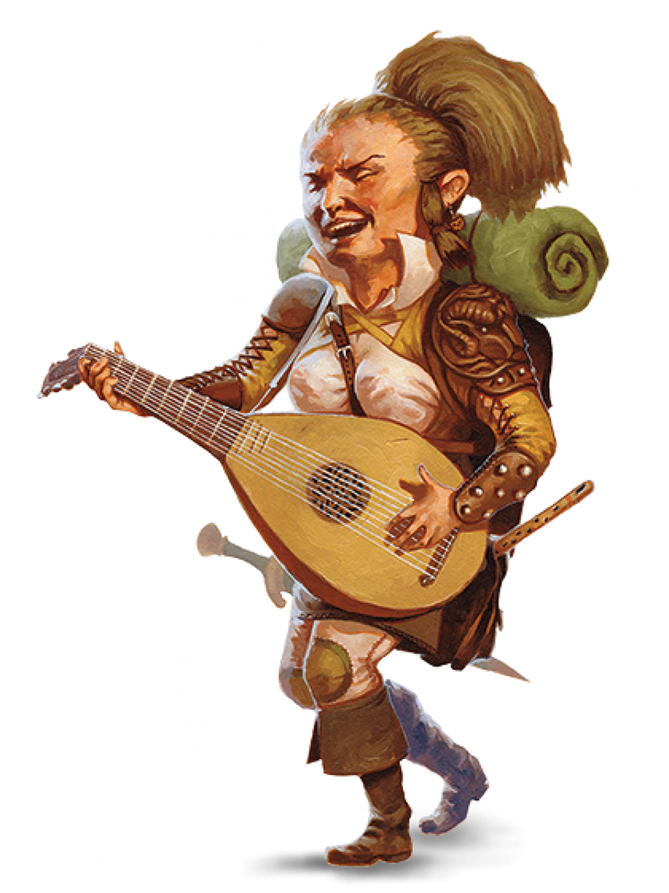

Halfling Guide

SMALL AND PRACTICAL
The diminutive halflings survive in a world full of larger
creatures by avoiding notice or, barring that, avoiding
offense. Standing about 3 feet tall, they appear re1atively
harmless and so have managed to survive for centuries
in the shadow of empires and on the edges of wars and
political strife. They are inclined to be stout, weighing
between 40 and 45 pounds.
Halflings' skin ranges from tan to pale with a ruddy
cast, and their hair is usually brown or sandy brown
and wavy. They have brown or hazel eyes. Halfling men
often sport long sideburns, but beards are rare among
them and mustaches even more so. They like to wear
simple, comfortable, and practical clothes, favoring
bright colors.
Halfling practicality extends beyond their clothing.
They're concerned with basic needs and simple
pleasures and have little use for ostentation. Even the
wealthiest of halflings keep their treasures locked in a
cellar rather than on display for all to see. They have
a knack for finding the most straightforward solution
to a problem, and have little patience for dithering.
Dward Traits
Your halfling character has a number of traits in common with all other halflings.
Ability Score Increase: Your Dexterity score increases by 2.
Making Lightfoot Halflings a good choice for Bards or Rogues
and making Stout Halflings a good choice for dex-based fighters.
Age: A halfling reaches adulthood at the age of 20 and generally lives into the middle of his or her second century.
Alignment: Most halflings are lawful good. As a rule, they are good-hearted and kind, hate to see others in pain, and have no tolerance for oppression. They are also very orderly and traditional, leaning heavily on the support of their community and the comfort of their old ways.
Size: Halflings average about 3 feet tall and weigh about 40 pounds. Your size is Small.
Speed: Your base walking speed is 25 feet.
Lucky: When you roll a 1 on the d20 for an Attack roll, ability check, or saving throw, you can reroll the die and must use the new roll.
Brave: You have advantage on saving throws against being Frightened.
Halfling Nimbleness: You can move through the space of any creature that is of a size larger than yours.
Languages: You can speak, read, and write Common and Halfling. The Halfling Language isn’t secret, but halflings are loath to share it with others. They write very little, so they don’t have a rich body of literature. Their oral tradition, however, is very strong. Almost all halflings speak Common to converse with the people in whose lands they dwell or through which they are traveling.